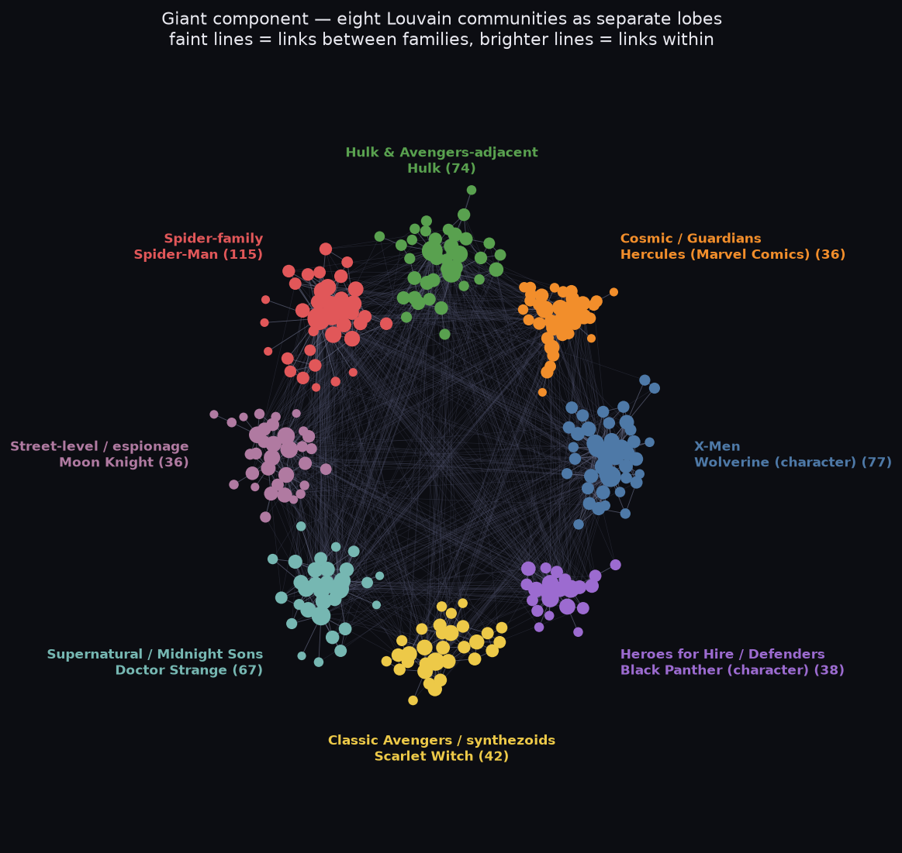
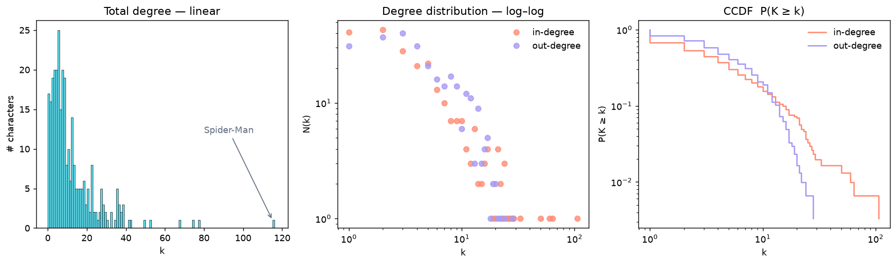

Week 01 · social graphs · go-nuts post
Who everyone links to,
who links to everyone,
and the islands in between.
The course hands us one frozen dataset: 303 Marvel superhero Wikipedia pages and the 1 784 directed links between them. I asked what its degree structure looks like, why in- and out-degree crown different characters, and what lives outside the giant component.
What I asked
Three questions
- 1. What shape is the degree distribution — and does it look scale-free on a log–log axis?
- 2. In-degree vs out-degree: the most linked-to character and the most linked-from character are not the same person. Why?
- 3. The data page warns there are isolated nodes. Are the isolates the only thing outside the giant component?
What I did
Load it so the isolates survive
Built the directed graph the way the data page insists on — add every
node from week1_nodes.tsv first, then the edges — so the
17 characters with no link in either direction do not silently vanish:
G = nx.DiGraph() G.add_nodes_from(n["node_id"] for n in nodes) # all 303 — isolates included G.add_edges_from(edges) # 1784 directed A -> B # G: 303 nodes, 1784 edges ✓ matches the release notes
Then: in/out degree per node, the degree distributions (linear and
log–log), weakly-connected components, Louvain communities, a
Wikipedia-API cross-check, and the drawings below. The full worked
analysis is the notebook analysis.ipynb
(jupytext source); raw data sits in
data/week1/.
Explore it
The network, live
Hover any character to light up who it links to (yellow) and who links to it (cyan); the rest fades. Recolour by community, component, or an in-degree heat map; drag the minimum-degree slider to peel the network down to its core; search, drag, zoom, double-click a node for its Wikipedia article.
The figure
Eight families, one island, a column of loners


| Most linked-to | in | out | Most linked-from | out | in |
|---|---|---|---|---|---|
| Spider-Man | 106 | 9 | Betsy Braddock | 28 | 7 |
| Hulk | 64 | 10 | Cloak and Dagger | 24 | 11 |
| Wolverine | 60 | 17 | Adam Warlock | 22 | 8 |
| Doctor Strange | 50 | 17 | Venom | 21 | 17 |
| Deadpool | 33 | 19 | She-Hulk | 20 | 29 |
Why in ≠ out
Fame is measured in in-degree
In-degree tracks how famous a character is. Spider-Man (106 in / 9 out) barely links out at all, but nearly every other article reaches for him as a reference point. Hulk, Wolverine and Doctor Strange work the same way — they are the pages other pages cite.
Out-degree tracks how tangled a character's own backstory is. Betsy Braddock / Psylocke tops out-degree (28 out / 7 in): a body-swapping, retconned history roped through half the X-Men, so her article name-drops everyone — but she is not a headliner, so few link back. Cloak and Dagger, Adam Warlock, U.S. Agent: same profile, dense ensemble history, modest fame. Reciprocity of only 0.39 says most links are one-way: the small orbit the C-lister into the star, rarely the reverse.
What surprised me
There is a second, hidden island
The data page told us about the 17 isolates. It did not mention that the giant component holds only 277 of the 286 non-isolated nodes. The other 9 form a completely separate island with no path — in either direction — to the rest of the Marvel universe.
And the nine are not random: Backhand, Blackthorn, Radian, Scaredycat, Scatterbrain, Shear, Snapdragon, Toxyn, Vyking — the entire cast of Strikeforce: Morituri, an 1986 Marvel series set in its own continuity. Their Wikipedia articles link to each other and to nothing else in the category. A self-contained comic becomes a self-contained graph component, decades later, in the link structure. If you build the graph from edges alone you lose the 17 isolates and silently fold this island's absence into "just a smaller giant component."
Stretch · Wikipedia API
Does the frozen snapshot match live Wikipedia?
For five characters I pulled the current wiki-source from the API
(action=parse&prop=wikitext, with a
User-Agent header or it 403s), scraped the
[[links]], kept the ones pointing at another of the 303,
and compared to the snapshot's out-edges (last section of
the notebook):
| character | snapshot | live wikitext | shared | snapshot-only | live-only |
|---|---|---|---|---|---|
| She-Hulk | 20 | 20 | 20 | 0 | 0 |
| Adam Warlock | 22 | 21 | 21 | 1 | 0 |
| Doctor Strange | 17 | 15 | 15 | 2 | 0 |
| Venom | 21 | 19 | 19 | 2 | 0 |
| Luke Cage | 9 | 7 | 7 | 2 | 0 |
82 of 89 snapshot edges (92%) fall straight out of a naive regex over
raw wiki-source, and zero live-only edges — nothing in
the current articles that the snapshot missed. The seven misses are all
links that live inside infobox/navbox {{templates}}, which
a plain [[ ]] scrape skips but the course's harvester
(rendered links, redirects resolved) correctly caught. The snapshot is
faithful and slightly fuller than a hand-rolled scrape — good
to know before I trust my own crawl for the final project.
Reproduce
Run it
pip install networkx matplotlib numpy scipy pandas jupyterlab jupyter lab showcases/week-01-network-questions/claude/analysis.ipynb # run all # the notebook also (re)writes data/graph.json + assets/*.png used by this page
Data downloaded from
the course data page
(week-1 frozen release, 2026-08-26) into data/week1/.
summary.json holds the headline numbers.